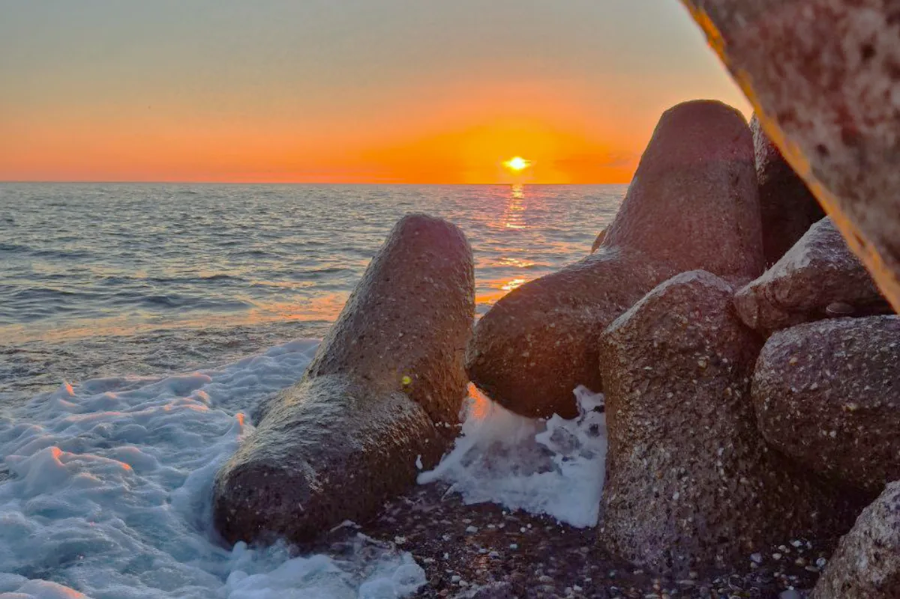
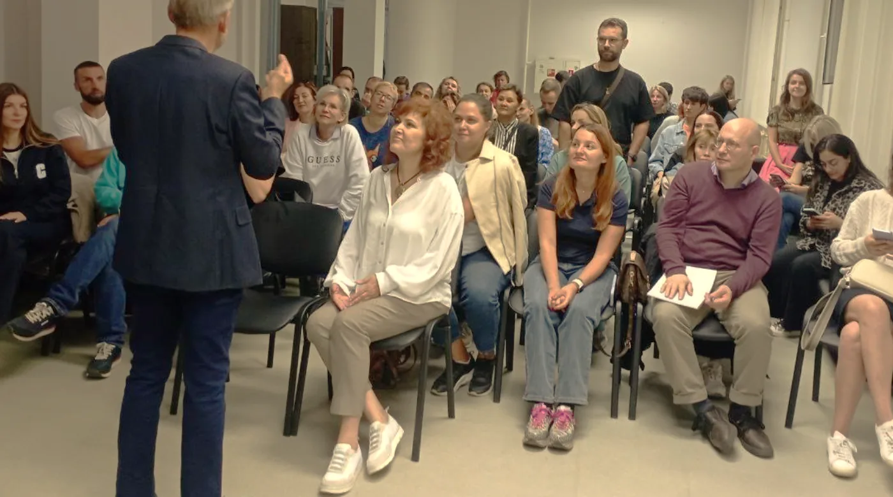
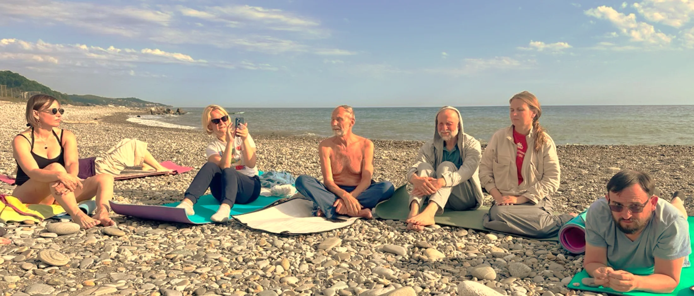
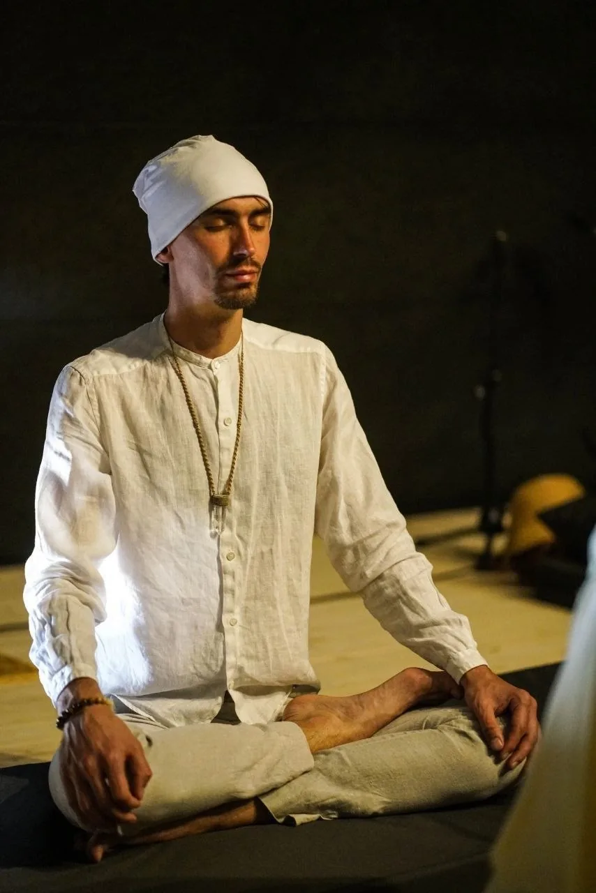
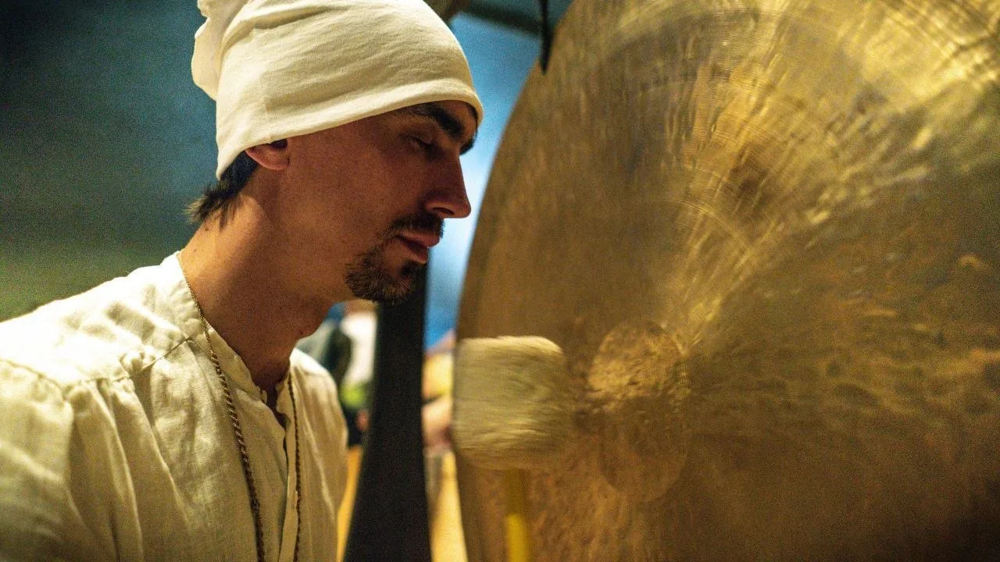
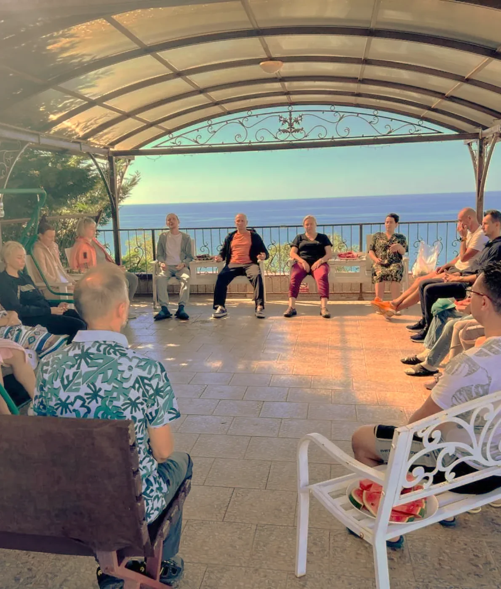
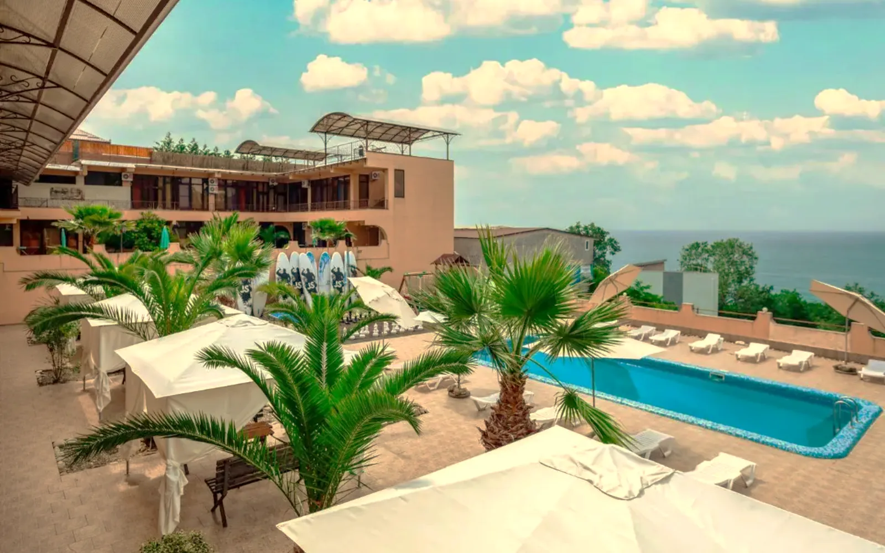
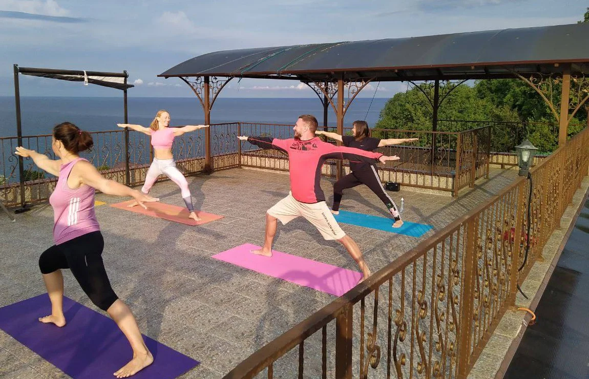
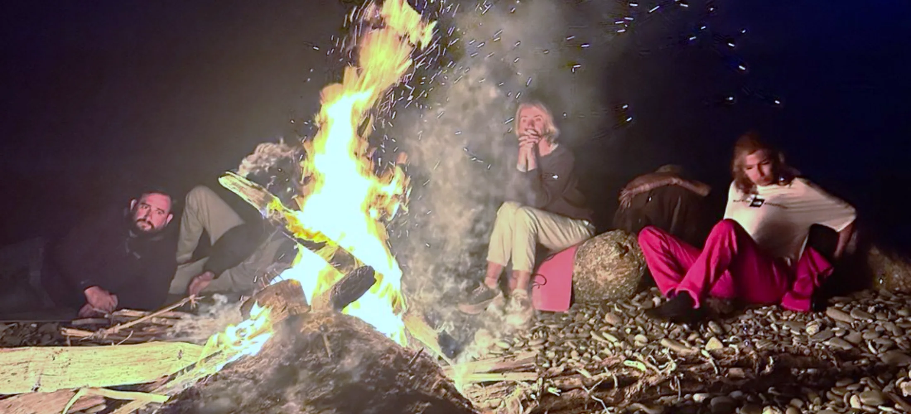

Вардане · Сочи · 20—27 августа 2026
Энергияморя и личной силы
Тренинг по энергоактивной психологии с Андреем Захаревичем
Как снять выгорание, пересобрать бизнес-стратегию и выйти на кратный доход
Забронировать место7
дней
16
мест в группе
40
лет практики автора
20.08
заезд
Энергия находится везде
По сути, вокруг нас — бесконечный источник энергии.
Так почему же тогда человеку не хватает энергии?
Где взять жизненные силы для здоровья, успешности и активного долголетия?
Как развить свои энергетические способности?
Если узнаёте себя хотя бы в двух пунктах
01
Сил хватает до обеда, дальше — на кофе и характере.
02
Бизнес стоит на месте, хотя вы работаете больше, чем год назад.
03
Отпуск больше не восстанавливает: возвращаетесь таким же уставшим.
04
Тело подаёт сигналы, которые вы привыкли не замечать.
Значит, дело не в тайм-менеджменте. Кончился ресурс.
Восстанавливается он не отпуском и не силой воли. Именно с этим работает энергоактивная психология — направление, которое сорок лет разрабатывает Андрей Захаревич. Разберём это на тренинге.
Приглашение
Андрей Захаревич — лично
Меньше минуты, от первого лица.

Более тысячи семинаров
За сорок лет через программы автора прошли десятки тысяч человек — от студентов до собственников.
Метод
Энергоактивная психология
Направление психологии и психотерапии, которое рассматривает психическую сферу человека как материальную структуру, а физическое тело — как своего рода производную психики.
40
лет разработки — не адаптация чужого метода
1000+
семинаров: через тренинги прошли тысячи человек
4 центра
научные организации, где проверяли практики
Научная проверка
- Институт мозга человека им. Н. П. Бехтеревой, Санкт-Петербург
- НИИ космической медицины ФМБА России, Москва
- Лаборатория биоэнергетики НТФ «Биосвязь»
- Университет им. П. Ф. Лесгафта
Чтобы начать, не нужно
- Особых знаний и опыта работы с энергетическим телом — практики осваиваются с нуля
- Определённого возраста и уровня подготовки — нагрузка подбирается по состоянию
- Интереса к теории и эзотерике — акцент на концентрации внимания и практиках
Где заканчивается материя и начинается энергия
С точки зрения современной физики невозможно строго обозначить грань между материей и энергией. Отсюда взгляд на человека как на единую материально-энергетическую систему, в которой психические энергии влияют и на биоэнергетическую, и на плотноматериальную составляющую. В научном сообществе всё чаще употребляется термин «психическая энергия».
Определение звучит сложно, практика — нет. Через тренинги по энергоактивной психологии прошли тысячи человек и получили результат в психологическом и физическом здоровье, состоянии энергетики и жизненном тонусе.
С чем работаем
Четыре энергетики, с которыми работаем
01
Физическая
Как обеспечивать энергию для поддержки тела и активного ведения бизнеса: сон, дыхание, подвижность, восстановление после нагрузки. База, без которой остальные три не работают.
02
Эмоциональная
Как проработать неконтролируемые эмоции и достичь стабильности, чтобы не терять контроль в бизнес-среде. Раздражение, апатия, фоновая тревога — разбираем, куда уходит ресурс.
03
Ментальная
Как развить ментальную энергию и сформировать прочное мышление для стратегических решений — вместо решений на автомате, которые принимаются в состоянии истощения.
04
Социальная
Как направить поток на формирование эффективной команды и надёжных партнёрств. Здесь же — где в вашей компании утекает энергия.
Также разбираем
Энергетическое состояние руководителя
Взаимосвязи: родовые, семейные, профессиональные
Утечка энергии из организации
HR и энергетика команды
Финансы и энергетика
Результаты · через 7 дней
С чем вы уезжаете
Не «вдохновение на пару недель». Ниже — то, что участники отмечают первым по возвращении.
+50%
Экономия энергии
Научитесь избегать истощения и сохранять силы даже после сложных переговоров и длинного рабочего дня.
+30%
Рост продуктивности
Справляетесь с задачами быстрее, освобождая время для семьи, отдыха и личных проектов.
Ясная голова
Уходит «туман», решения принимаются быстро — без лишнего анализа и стресса.
Ровный уровень энергии
Больше никаких провалов после обеда: бодрость держится с утра до вечера.
Качество сна
Засыпаете легко, высыпаетесь быстрее, просыпаетесь без чувства усталости.
Лидерский ресурс
Команда снова считывает вашу силу и уверенность — в том числе в сложных ситуациях.
Новые возможности для дохода
Начинаете видеть варианты, которые раньше просто проходили мимо внимания.
Баланс с личной жизнью
Силы остаются не только на бизнес, но и на семью, поездки и себя.
Здоровье и стрессоустойчивость
Уходят бессонница, головные боли и ощущение, что организм работает на пределе.
Ощущение контроля
Снова чувствуете себя хозяином своей жизни, а не заложником обстоятельств.

Утренняя сессия · пляж
Программа
Ритм дня на тренинге
08:00Зарядка и биоактивная йога
08:00
Зарядка и биоактивная йога
Мягкая физическая работа: подвижность, растяжка, дыхание в движении. После – завтрак и перерыв. Ведёт Павитра – приглашённый мастер программы.
11:00Утренний модуль: энергетическая система
11:00
Утренний модуль: энергетическая система
Работа с энергетической системой человека: меридианы, энергетические центры, потоки и каналы, биологические поля разной плотности. Принципы активации энергосистемы и методы энергетической защиты. Темы распределены по всей неделе.
14:00Обед и отдых
14:00
Обед и отдых
Свободное время до вечернего модуля: море, сон, работа – по желанию.
16:00Бизнес-модуль
16:00
Бизнес-модуль
Энергетика бизнес-процессов: как внедрить энергетические практики в управление, сформировать команду, выстроить энергетические взаимосвязи с партнёрами. Отдельная тема – духовно-энергетические источники вашего бизнеса. После – отдых.
18:30 – 20:00Свободное время
18:30 – 20:00
Свободное время
Море, прогулки, общение — до вечернего модуля.
20:00Дыхательные практики в зале
20:00
Дыхательные практики в зале
До 22:00. Энергоактивное дыхание и практики погружения в медитативное состояние.
23:00
Ночные трансформационные процессы
До 03:00, через день. Авторская методика Андрея Захаревича: набор энергии и формирование высокого энергетического потенциала. На следующее утро после ночной практики – мягкий режим.
Что входит в программу
Многомерные дневные процессы
Два модуля с автором ежедневно: утренний – энергетическая система человека, дневной – энергетика бизнеса.
Ночные трансформационные процессы
Групповая практика с 23:00 до 03:00, проходит через день. Авторская методика набора энергии; следующее утро после неё – мягкий режим.
Энергоактивное дыхание
Дыхание в заданном ритме под счёт ведущего — основной инструмент метода.
Практики привлечения энергии и разгрузки
Упражнения на снятие накопленного напряжения — телесные и на концентрацию внимания.
Биоэнергетическая йога и упражнения
Мягкая физическая работа утром: растяжка, подвижность, дыхание в движении. Утренние практики ведёт приглашённый мастер Павитра.
Взаимодействие с природной энергетикой
Практики на берегу и в воде: бег, ходьба, плавание в заданном режиме.
Оздоравливающее питание и сухое голодание
Вегетарианский рацион, два приёма пищи: завтрак и обед. Два дня за тренинг – воздержание от пищи и воды (сухой голод): строго по желанию, только после анкеты здоровья и согласования с ведущим.
Банные практики и холодовые воздействия
Контрастные процедуры. Участие добровольное, интенсивность выбираете сами.
Приглашённый мастер
Павитра
Проводник Три йоги, парной йоги и гонг-медитации. 25 лет практики.

Ведёт утренние практики йоги и проводит гонг-медитацию – звуковую практику глубокого расслабления. Сочетает телесную, дыхательную и медитативную работу, подбирая нагрузку под особенности тела и состояния каждого участника. Акцент – на верном и безопасном выполнении, расслаблении и осознанности.
«Представьте, что вы стоите на берегу океана, и на вас накатывают волны звука. Напряжение уходит, оставляя место покою – вы как чистый холст, готовый принять новые краски».
Павитра

Гонг-медитация
Групповая звуковая практика: участники лежат, Павитра играет на гонге. Вибрации звука дают глубокое мышечное и нервное расслабление – многие сравнивают состояние после с эффектом полноценного дневного сна.
Совместите тренинг и отдых на море
Что может быть лучше, чем соединить трансформационный тренинг с отдыхом на жемчужине черноморского побережья России.
Ведь это
—Тёплое и ласковое море, дендрарий, озёра и водопады
—Уникальный климат — субтропический полувлажный
—Потрясающие места для практик — галечные пляжи
—Активные энергетические практики при беге, ходьбе, плавании
—Здоровое вегетарианское питание
—Солнце, море, горы и масса психологического позитива
Место
Ретрит-центр «Лето», Вардане
Субтропики Лазаревского района: галечные пляжи, дендрарий, озёра и водопады. Закрытая территория на склоне над морем: три корпуса, бассейн, беседки и террасы, где проходят дневные сессии. Спуск к галечному пляжу — семь минут пешком. Во всех номерах кондиционер, холодильник, душ; охраняемая парковка.



3
корпуса, 8 типов номеров
300 м
до моря, спуск 7 минут
от3 000 ₽
проживание в сутки
1 500 ₽
питание: завтрак и обед
Сбор группы
20 августа к 18:00 мск в отеле. Заселение с 14:00, выезд 27 августа до 12:00.
Как добраться
Из аэропорта — скоростной электричкой до станции Вардане (или до Лоо), дальше такси. Адрес: ул. Рассветная 22/14, пос. Вардане.
Взять с собой
Туристический коврик, спортивную одежду (в том числе тёплую) и обувь, купальник для моря и бани.

Костёр на берегу
Что говорят те, с кем работал Андрей Захаревич
Энергетические практики Андрея Захаревича используют бизнес-спикеры Радислав Гандапас, Влад Бермуда, Андрей Коломыц, Андрей Богокин, Александр Воронин, Тимур Тажетдинов.
Чем раньше — тем дешевле
Цена участия растёт по мере набора группы. Проживание и питание оплачиваются отдельно в ретрит-центре.
Действует сейчас
Первая волна
70 000 ₽
при оплате до 5 августа
Действует сейчас
Вторая волна
100 000 ₽
при оплате до 15 августа
Действует сейчас
Третья волна
120 000 ₽
при оплате до 20 августа
Участие в рассрочку
Индивидуальная консультация
Работа с наставником
Входит в стоимость участия
- Все групповые сессии с автором — 7 дней
- Индивидуальный разбор стратегии
- Утренние и вечерние практики
- Материалы и поддержка группы после ретрита
Оплачивается отдельно
- Проживание — от 3 000 ₽ в сутки
- Питание — 1 500 ₽ в день: вегетарианские завтрак и обед
- Дорога до Вардане
Пример полного бюджета
Участие 70 000 ₽ + проживание 7 ночей от 21 000 ₽ + питание 10 500 ₽ = от 101 500 ₽.
О чём обычно спрашивают до оплаты
Кому не подойдёт?
Часть практик имеет противопоказания: сердечно-сосудистые заболевания в острой фазе, беременность, состояния, требующие постоянного наблюдения. Перед заездом заполняется анкета здоровья — точный список согласуем с профильным специалистом.
Можно ли работать во время ретрита?
Да, свободное время – после обеда до 16:00. Но чем меньше вы работаете, тем выше результат.
Ночные практики до трёх часов ночи – я не высплюсь?
Ночные процессы проходят через день, а не ежедневно. На следующее утро – мягкий режим без ранних практик. Участники прошлых потоков отмечают, что при высоком уровне энергии восстанавливаются быстрее обычного, но режим вы регулируете сами – участие в каждой практике добровольное.
Что если придётся отменить поездку?
Условия возврата и переноса организаторы обсуждают индивидуально. Зафиксируйте договорённости до оплаты — письмом или в переписке с менеджером (телеграм @Xenaja).
Есть рассрочка?
Да. Отметьте это в заявке — организаторы расскажут срок, размер первого взноса и условия партнёра.
Слово автора
В энергоактивной психологии нет ничего сверхъестественного или неестественного. Это не особая практика, отдельная от всего происходящего в жизни, — это особый способ жизни.
Андрей Захаревич
Всё то, что вы и так делаете — дышите, ходите, спите, говорите, управляете, планируете, распределяете, — вы можете делать во много раз эффективнее. Помогая себе и близким быть здоровыми и счастливыми в любой ситуации. Вот, собственно, и весь секрет.
Если чувствуете, что способны в своей жизни на большее, но нужен толчок для прорыва, — жду вас в Вардане.
Заявка
Забронировать место в группе
Это ещё не оплата. Оставьте имя и контакт — расскажем условия, ответим на вопросы и пришлём полное расписание.
Первая волна 70 000 ₽ — при оплате до 5 августа